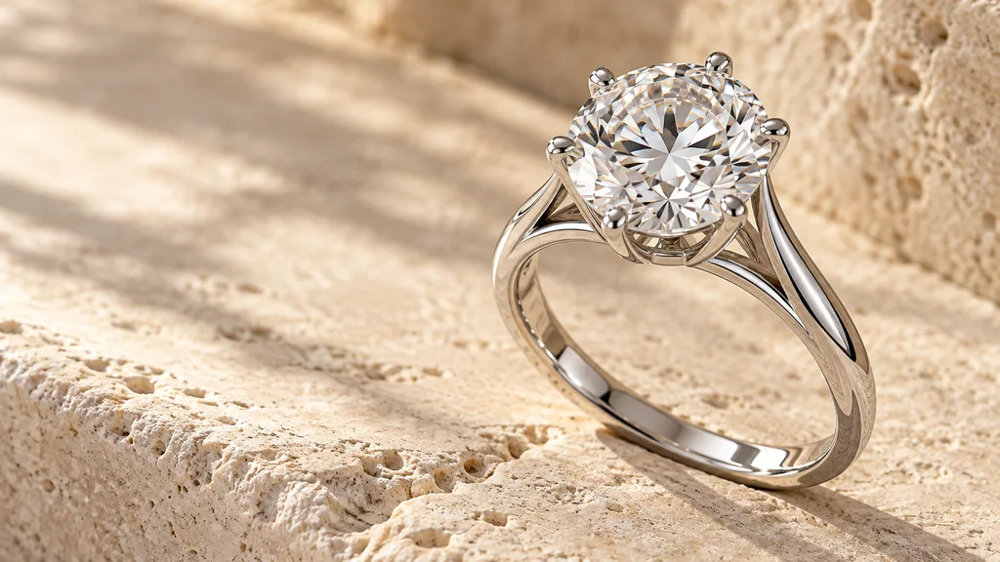

Время становится
драгоценным.
За одним кольцом — целая вселенная.
Откройте её, двигаясь к истокам.
За одним кольцом — целая вселенная.
Откройте её, двигаясь к истокам.
Холодный блеск белого золота.
Свет, пойманный гранями. Форма, в которой
каждая линия обрела своё место.
Камень покидает оправу. Полировка исчезает.
Остаётся первая отливка — шероховатая,
с литником, ещё хранящая след рождения.
Воск исчезает, оставляя точную форму.
Жидкий металл проходит по каналам
и рождает кольцо — изнутри.
Слиток золота. Необработанный алмаз.
Две разные природы, которым однажды
предстоит встретиться в одном украшении.
Глубоко в породе начинается история
драгоценных материалов. Мастер продолжает
то, что задолго до него создала природа.
Видеть происхождение. Замечать прикосновение.
Чувствовать время, которое обрело форму.
Кольцо становится личным, когда вы знаете его историю.
У каждой грани — свой путь света.
Рассмотрите форму, из которой
рождается сияние.

Белое золото отражает свет, оставляя главную роль камню. Открытая оправа пропускает его к граням. Плавная линия шинки соединяет всё в одну форму.
Круглая бриллиантовая огранка раскрывает игру отражений. Поворачивайте кольцо в 3D, чтобы увидеть, как меняется свет.
Шесть тонких крапанов удерживают камень. Открытая конструкция подчёркивает геометрию и позволяет рассмотреть его со всех сторон.
После литья мастер убирает литник, обрабатывает поверхность и доводит её до зеркального блеска. Только затем наступает закрепка.
От шинки и огранки до закрепки и металла.
Создайте кольцо в 3D и сохраните личный эскиз.